Max Beckmann fue un pintor alemán. Beckmann nació en Leipzig en el seno de una familia de granjeros,
que abandonaron la granja para establecerse en Leipzig después de su nacimiento. Beckmann comenzó a
dibujar a una edad temprana y en 1900 ingresó en la Academia de Artes de Weimar.
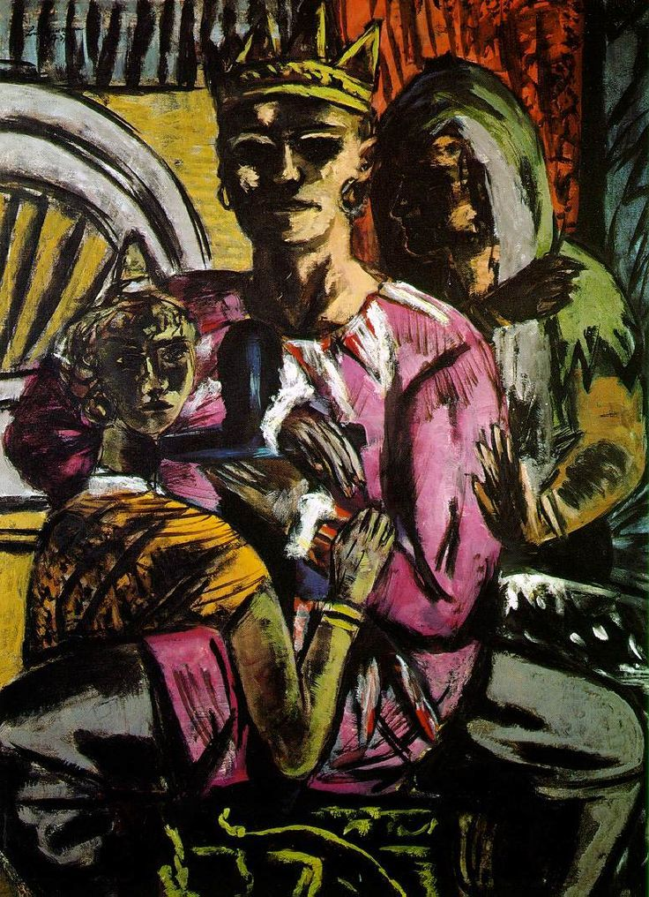
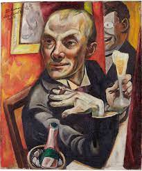
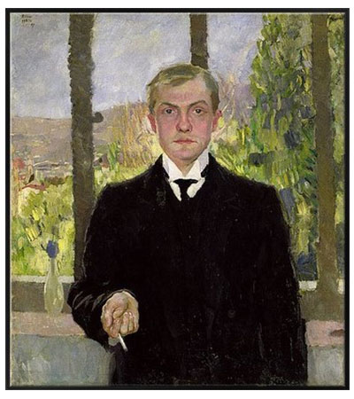
William-Adolphe Bouguereau fue un pintor francés, uno de los principales exponentes del academicismo.
Alumno de François Édouard Picot en París con 21 años y pensionado en la
Villa Médici romana con 25.
 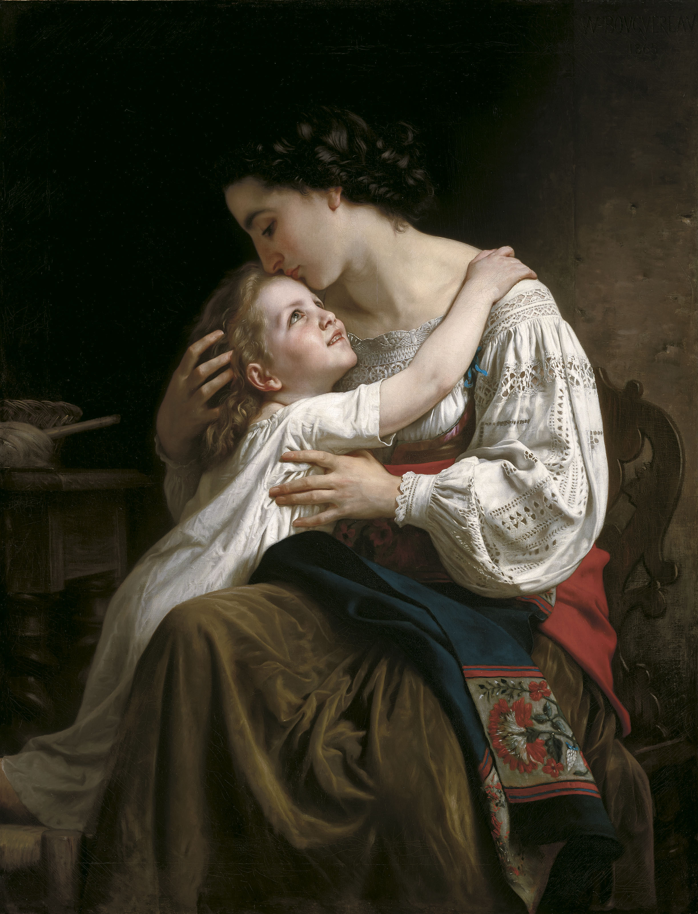
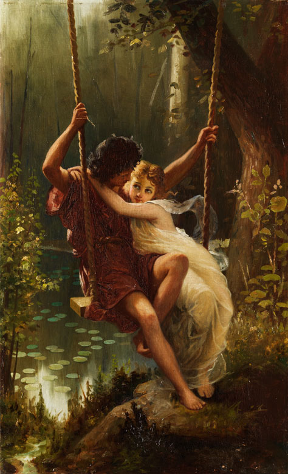
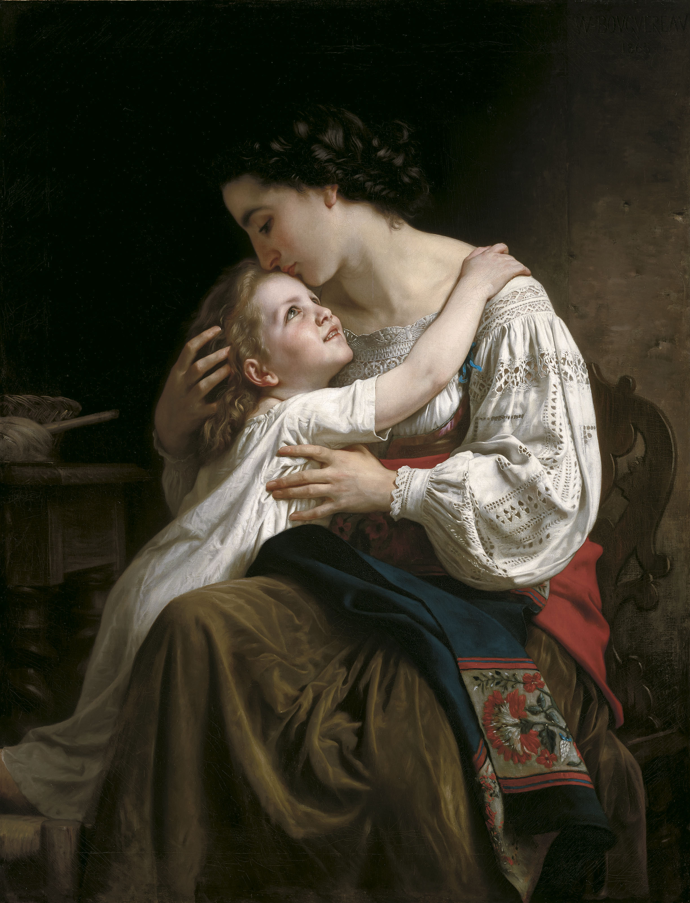
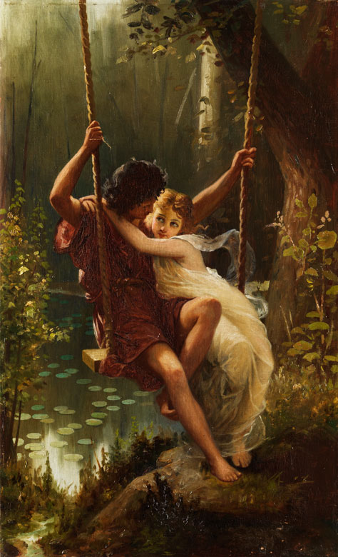
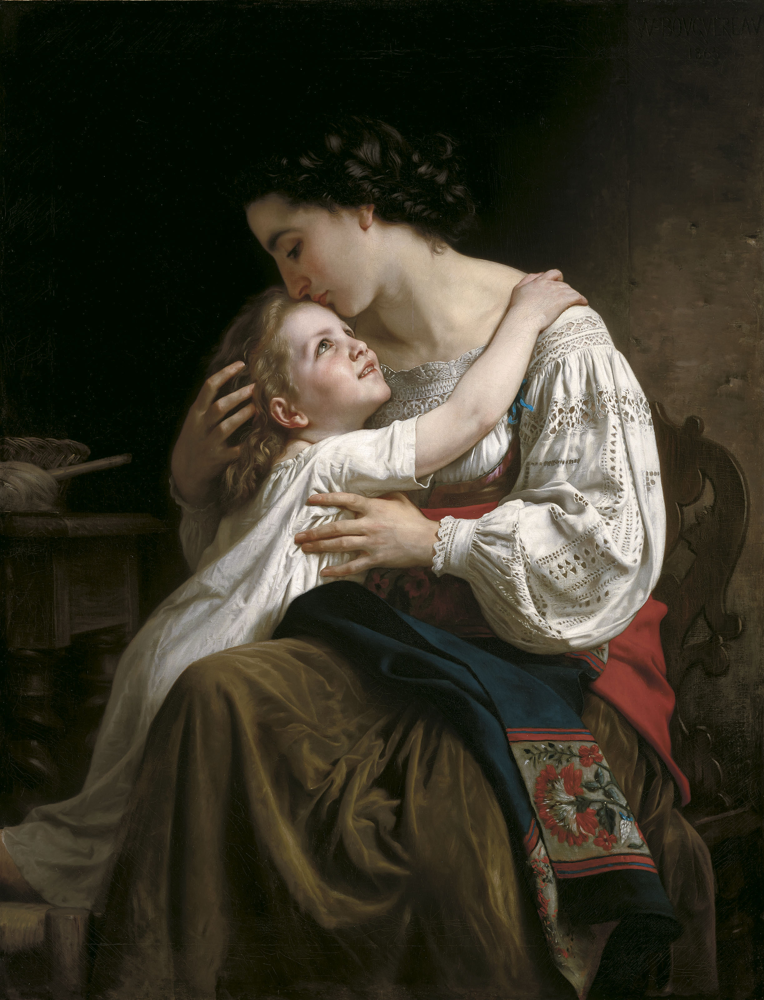
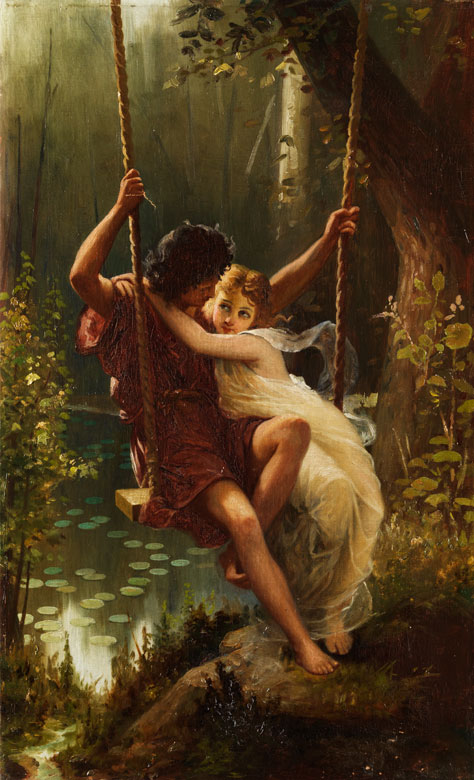
Edvard Munch /ˈɛdvɑ:ʈ mʉŋk/ fue un pintor y grabador noruego. Sus evocativas obras sobre la angustia
influyeron profundamente en el expresionismo alemán de comienzos del siglo XX.
 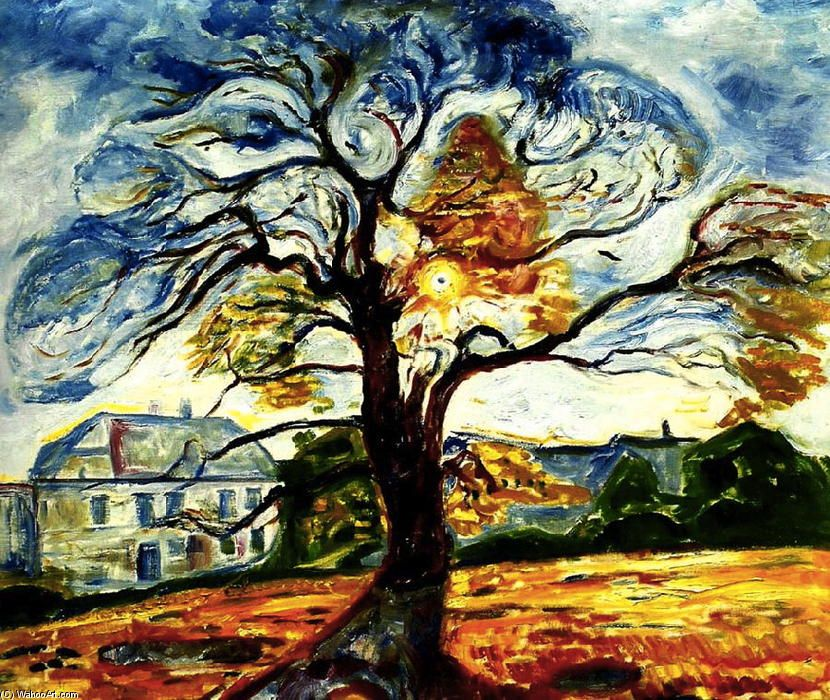
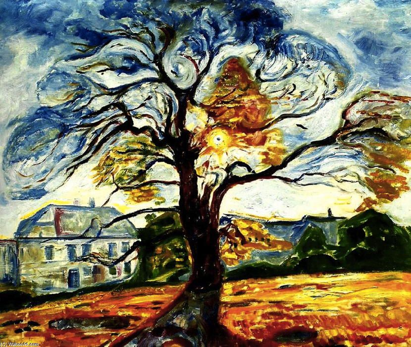

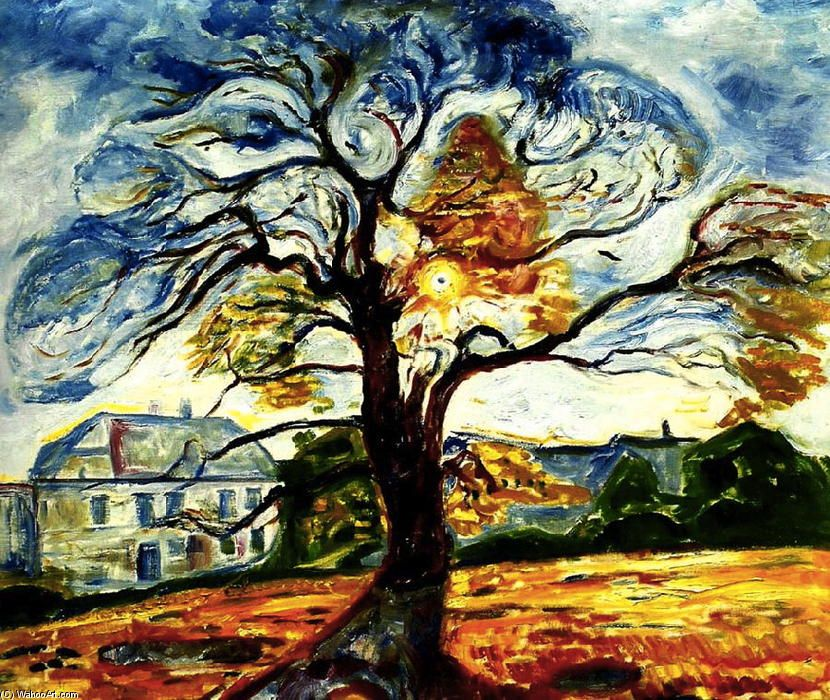
Vasili Vasílievich Kandinsky fue un pintor ruso, precursor del arte abstracto en pintura y teórico
del arte. Se considera que con él comienzan la abstracción lírica y el expresionismo.Pasó su niñez
en Odessa, donde se graduó en la Escuela de Arte Grekov Odessa
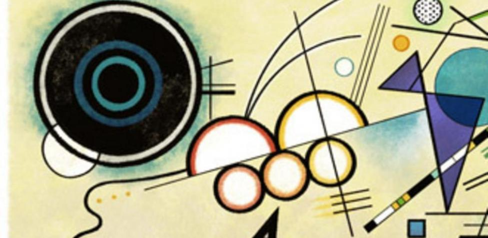
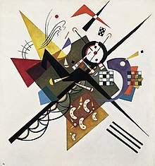
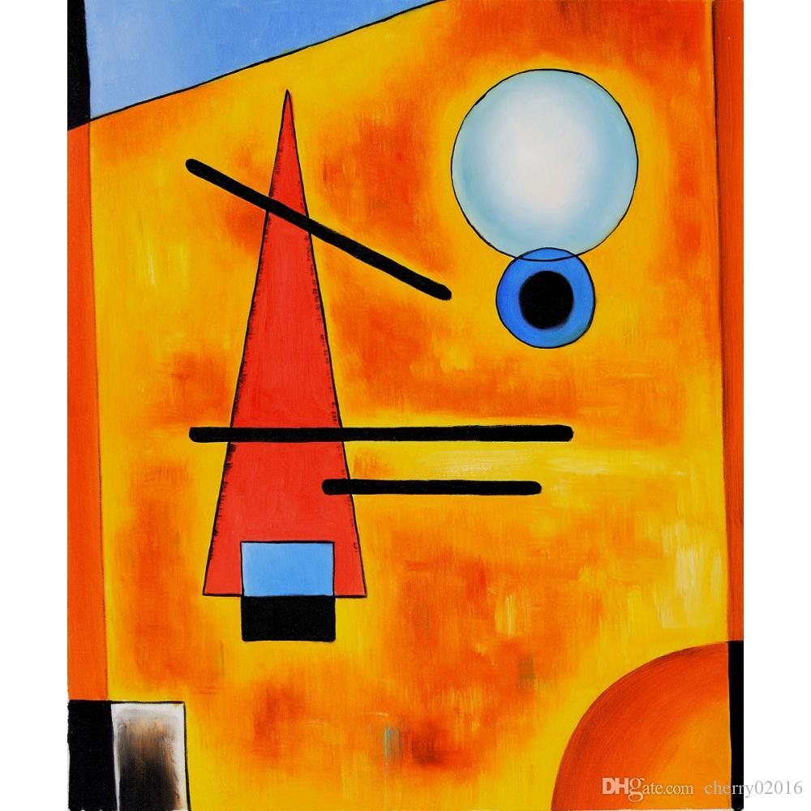
Jacob Abraham Camille Pissarro, más conocido como Camille Pissarro, fue un pintor
impresionista franco-danés. Considerado como uno de los padres del impresionismo,
Pissarro pintó la vida rural francesa, en concreto los paisajes y las escenas en los que aparecían
campesinos trabajando, pero también escenas urbanas en Montmartre. En París tuvo como discípulos a
Paul Cézanne, Paul Gauguin, Jean Peské y Henri-Martin Lamotte; así como a su propio hijo Lucien
Pissarro y a la pintora impresionista estadounidense Mary Cassatt.
Pissarro fue asimismo un teórico de la anarquía, y frecuentó con asiduidad a los pintores de
la Nueva Atenas que pertenecían a ese movimiento. Compartió esa posición con Gauguin, con quien
luego tuvo relaciones tensas.2
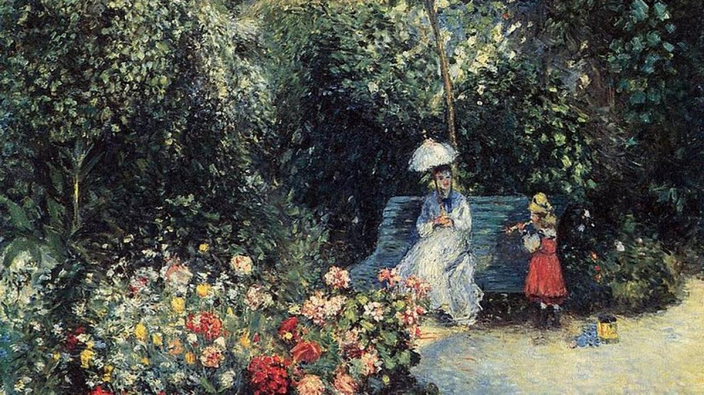
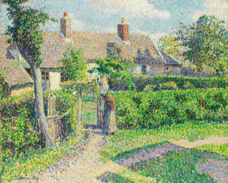
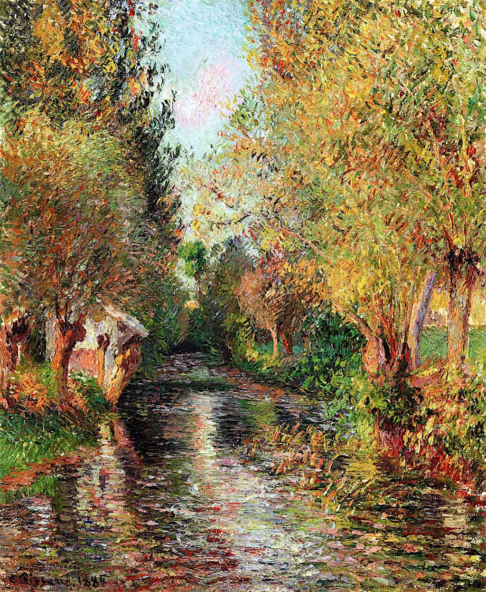